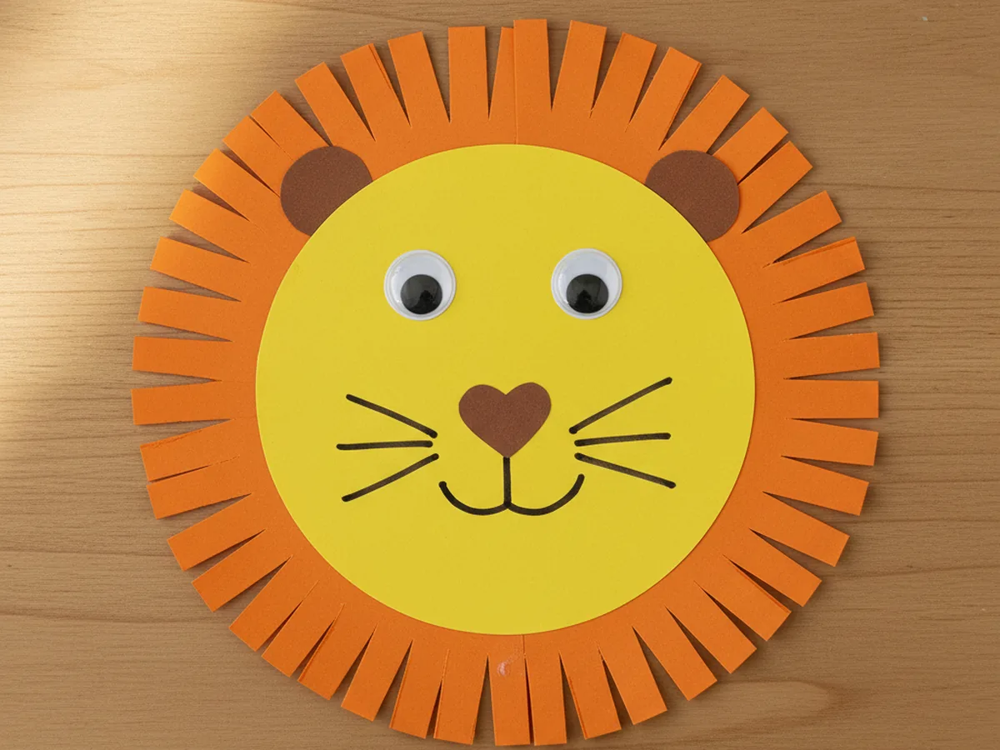
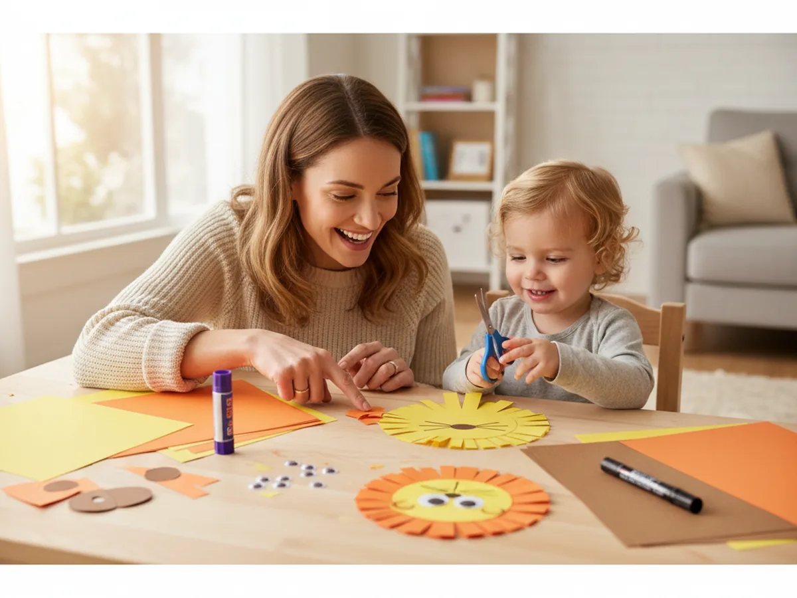
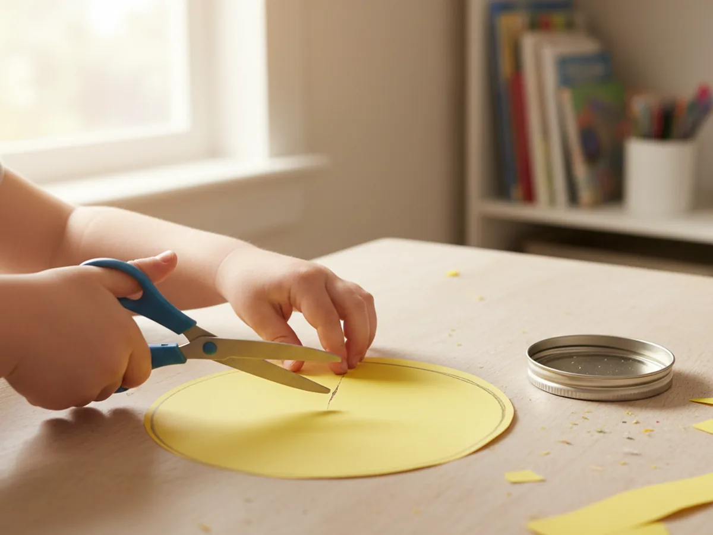
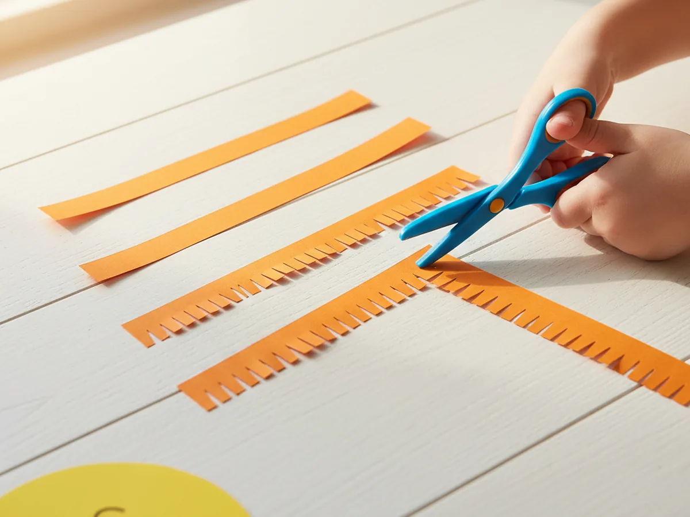
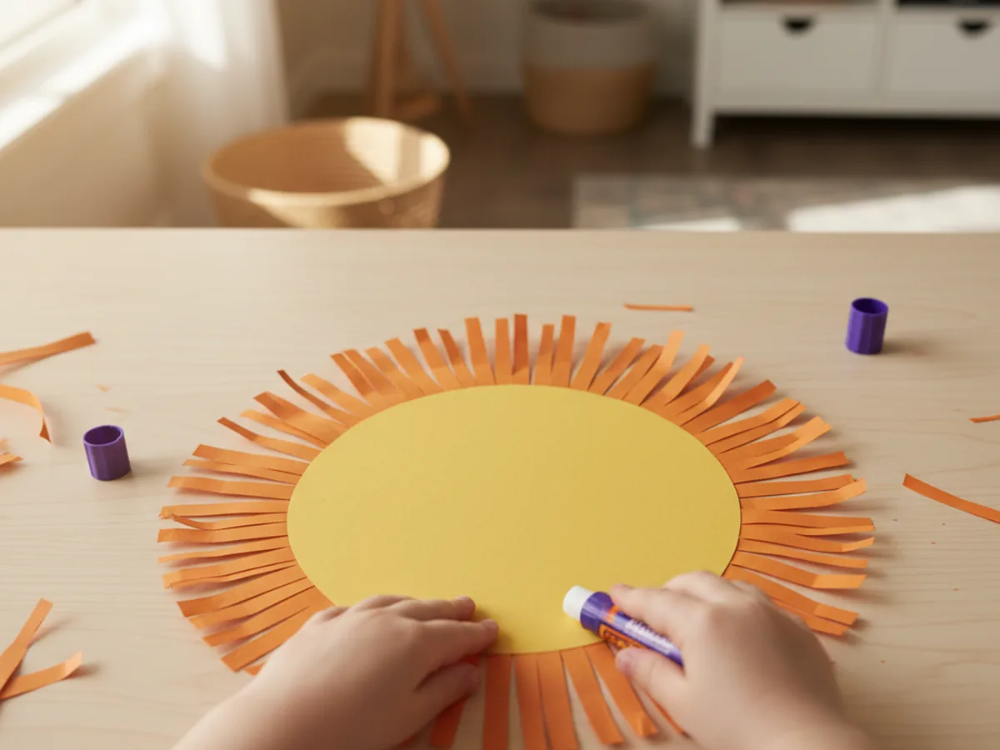
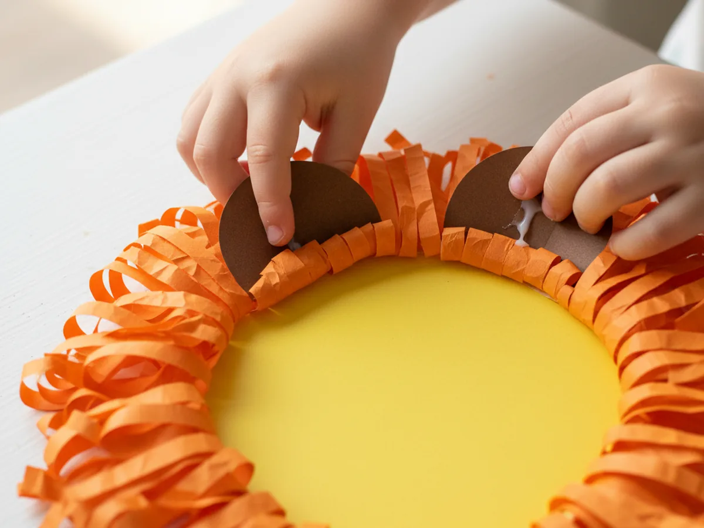
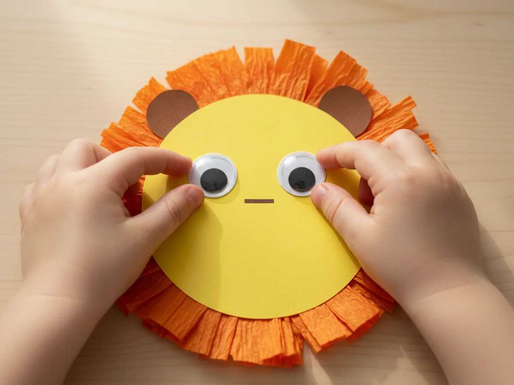
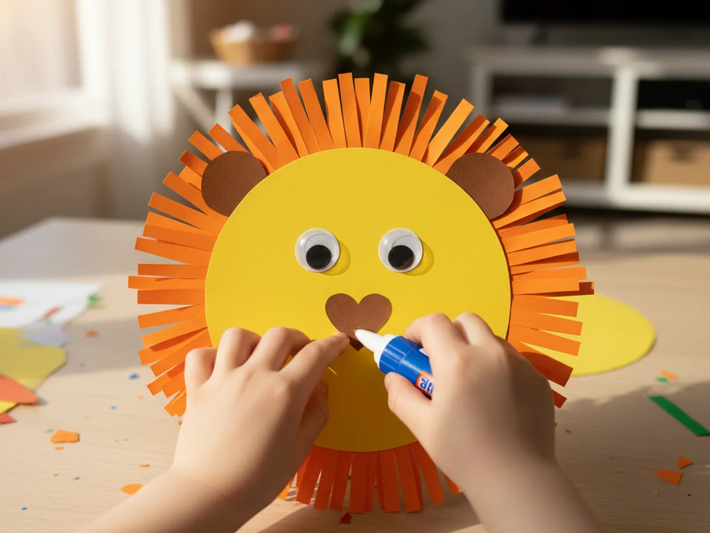
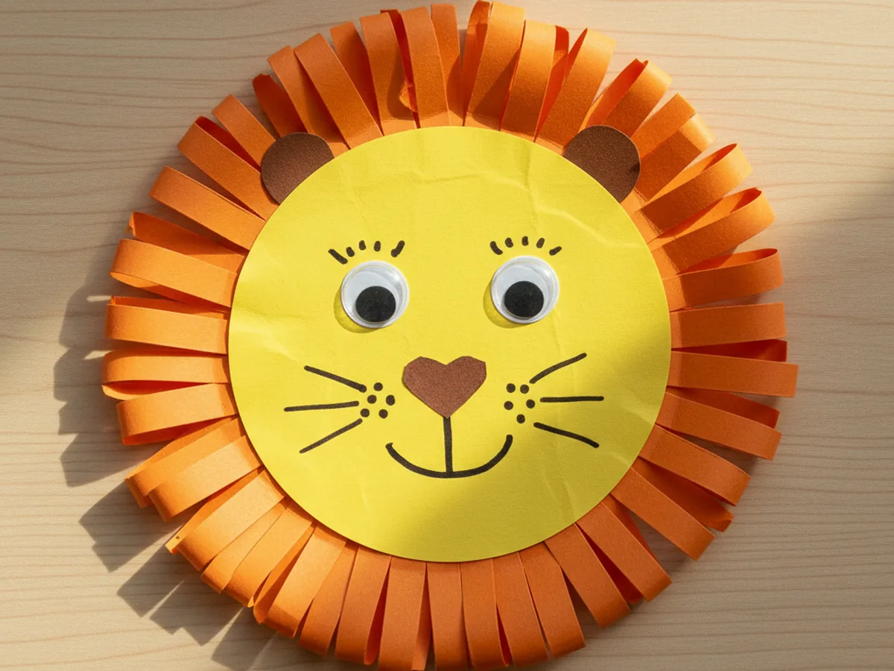

If your little one loves all things wild and roar-y, this lion craft paper project is going to be a big hit. It comes together with a few sheets of construction paper, takes about 30 minutes, and finishes with the cutest fringed-mane lion that practically begs to be hung on the fridge. There is no painting, very little mess, and so many proud smiles at the end. 🦁
Toddlers can help with almost every step, and bigger kids can make their lion truly one of a kind. Every finished lion looks a little different, and that is exactly what makes this paper lion craft feel so special.
Why Kids Love This Craft
Lions are pure magic to little ones. They are big, brave, and loud, and they roar like nothing else in the animal world. When a child gets to make their own lion craft paper, that wonder turns into something they can hold up, roar at, and proudly show off. Children love saying "I made him myself," and a friendly little paper lion gives them that feeling instantly.
This project is also wonderful for tiny hands. Cutting the face circle helps with scissor control. Making the fringed mane is one of those almost-magical craft techniques that kids feel so proud to learn. And gluing all the little pieces in place teaches order and patience in the sweetest way. It looks like simple play, but real fine motor learning is happening the whole time.
Best of all, this simple lion paper craft gives you a slow, screen-free moment together. You can chat about safaris, make playful roars together, or invent a name and story for your lion. Those tiny side conversations are often the part children remember years later.

What You'll Need
Here is everything you will need to make this easy lion craft paper at home. Lay everything out on the table before you start so the activity flows smoothly once your little one sits down.
- Crayola Construction Paper (240 sheets, assorted colors), you will need yellow, orange, and brown sheets for this craft.
- Fiskars Training Scissors for Kids, spring-action and blunt-tipped, perfect for the small fringe snips.
- Elmer's School Glue Sticks (30-pack), washable and easy for little hands to twist open.
- DECORA Self-Adhesive Googly Eyes (assorted sizes), two per lion, peel and press.
- Crayola Washable Broad Line Markers, for drawing the mouth and whiskers.
- A pencil, for tracing the face circle and the ears before cutting.
- A small bowl or jar lid, useful for tracing a round face shape.
Step-by-Step Instructions
This paper lion craft step by step is genuinely easy to follow. Take it one little step at a time and let your child do as much of the work as they comfortably can.
Step 1: Cut the Lion's Face
Start with a sheet of bright yellow construction paper. Use a small bowl, a jar lid, or a pencil to trace a circle about five inches across in the middle of the paper. This circle will become the lion's friendly face. Once the shape is drawn, have your child carefully cut along the line. A slightly wobbly circle is totally fine and gives the lion a sweet handmade look.
For younger toddlers, pre-trace and even pre-cut the circle so they can save their cutting energy for the mane fringe in the next step.

Step 2: Fringe the Mane Strips
Now for the part that makes a lion look like a lion. Take a sheet of orange construction paper and cut four or five long strips, each about one inch wide. Along one long edge of each strip, have your child make small straight snips about half an inch deep, spaced closely together. The snips do not have to be perfect. Uneven fringe actually looks more like real fur.
This step is incredibly satisfying for little crafters. Most kids get into a happy rhythm with the snipping, and it is wonderful practice for scissor control without ever feeling like work.

Step 3: Glue the Mane Around the Face
Flip your yellow face circle over so the back is up. Using a glue stick, run a line of glue all the way around the back edge of the circle. Press the fringed orange strips onto the glue with the un-fringed edge touching the circle and the snipped fringe pointing outward. Keep adding strips around the full edge so the fringe peeks out evenly all the way around like a big fluffy mane.
When you flip the lion back over, you will both gasp a little. A plain yellow circle suddenly becomes a real little lion, and it is the cutest moment of the whole craft.

Step 4: Add the Lion's Ears
Take a small piece of brown construction paper and cut two little rounded ear shapes, each about the size of a quarter. A simple half-circle or oval works perfectly. Have your child glue them to the top of the yellow face, tucked just slightly behind the mane so they peek up like soft little lion ears.
If you want extra detail, you can cut two even smaller orange or pink shapes and glue them inside the brown ears for a sweet inner-ear look.

Step 5: Stick On the Googly Eyes
Peel the backing off two self-adhesive googly eyes and let your child press them firmly onto the upper half of the yellow face, leaving a little space between them. Two medium eyes look adorable, but two small eyes placed close together work just as well. The moment those eyes go on, the lion suddenly has personality and feels like a real little friend.
Our last lion ended up looking very surprised, like he had just spotted a butterfly, and the kids laughed about it for ages.

Step 6: Add the Nose
Cut a small heart shape or rounded triangle from brown construction paper, about the size of a thumbprint. This will be the lion's cute little nose. Have your child glue it right in the middle of the face, just below the eyes. The point of the heart or triangle should face down so it leads naturally to where the mouth will go.

Step 7: Draw the Mouth and Whiskers
Time for the final details. Use a black washable marker to draw a small curved line going down from the point of the nose, then add a wide letter-W or two little curves under it for a friendly lion mouth. Add three short whisker lines on each side of the nose, and a few tiny dots above each whisker line for a furry look.
Once the lion is finished, hold him up in front of your child and give a big playful roar together. Most kids burst into giggles right then, and that is exactly the moment this whole lion craft paper is for. 💛

Variations to Try
Paper Plate Lion: Glue the same fringed orange mane strips around the back of a small white paper plate instead of cutting a yellow circle. Paint or color the front of the plate yellow, then add ears, eyes, nose, mouth, and whiskers the same way. The paper plate gives the lion a bigger, sturdier shape that looks great hanging on a wall.
Handprint Lion Mane: Trace your child's handprints onto orange and yellow construction paper several times, then cut them out and glue them around the back of the face like a mane made of little hands. This version turns the craft into a sweet keepsake, especially when you write the date on the back.
Safari Scene Lion: Glue the finished lion onto a large piece of light green or tan construction paper. Add cut paper grass strips along the bottom, a yellow sun in the corner, and maybe a little paper acacia tree. Suddenly you have a whole safari scene your child can be proud of.
Final Thoughts
This lion craft paper tutorial is one of those projects that feels almost too simple for how adorable the finished lion turns out. It uses a handful of basic supplies, takes about 30 minutes, and leaves you with the kind of charming little keepsake a child runs to show off to anyone who walks through the door. More than that, it gives both of you a slow, joyful moment of making something together. 🌿
If your little one makes their own paper lion, I would love to see it. Pin this tutorial on Pinterest so other craft-loving mamas can find it easily. Happy crafting!
More Crafts You'll Love
If your little one enjoyed this lion craft paper, they will adore these other sweet animal paper crafts too: